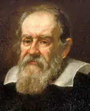

IsaacNewton-Sir Issac Newton (1643- 1726) was an English
mathematician, physicist and scientist. He is widely
regarded as one of the most influential scientists of all time, developing new laws of mechanics, gravity and
laws of motion. His work Principia Mathematica (1687) laid the framework for the Scientific Revolution of the
Seventeenth Century. A great polymath, Newton’s investigations also included areas of optics, religion and
alchemy.
Early Life of Newton
Sir Isaac Newton was born on Christmas Day, in 1643, to a relatively poor farming family. His father died three
months before he was born. His mother later remarried, but her second husband did not get on with Isaac; leading
to friction between Isaac and his parents. The young Isaac attended school at King’s School, Grantham in
Lincolnshire (where his signature is still inscribed on the walls.) Isaac was one of the top students, but
before completing his studies his mother withdrew him from school, so Isaac could work as a farmer. It was only
through the intervention of the headmaster that Isaac was able to return to finish his studies; he passed his
final exams with very good results and was able to go to Trinity College, Cambridge.
Newton at Cambridge
Isaac NewtonAt Cambridge, he was able to pursue his interests in mathematics, science and physics. At the time
the prevailing education was based on Aristotle, but Isaac was more interested in modern mathematicians such as
Rene Descartes. Isaac Newton had a prodigious capacity to consider mathematical problems, and then focus on them
until he had solved the mystery behind them. His one-pointed nature led him to, at times, be detached from the
world. For example, he had little time for women. An early teenage romance came to nothing, and he remained
single throughout his life.
Sir Isaac Newton, has been referred to as one of the greatest geniuses of history. His mathematical and
scientific achievements give credence to such a view. His many accomplishments in the field of science include:
Developing a theory of calculus. Unfortunately, at the same time as Newton, calculus was being
developed by
Leibniz. When Leibniz published his results, there was a bitter feud between the two men, with Newton claiming
plagiarism. This bitter feud lasted until Leibniz death in 1713, it also extended between British mathematicians
and the continent.
Mathematical achievements of Newton
Generalized binomial theorem
Newton’s identities,
Newton’s method,
Classified cubic plane curves (polynomials of degree three in two variables),
Substantial contributions to the theory of finite differences,
Use of fractional indices
Used geometry to derive solutions to Diophantine equations.
Used power series with confidence and to revert power series.
Discovered a new formula for pi.
Scientific Achievements of Newton
Optics – Newton made great advancements in the study of optics. In particular, he developed
the spectrum by
splitting white light through a prism.
Telescope – Made significant improvements to the development of the telescope. However, when his
ideas were
criticised by Hooke, Newton withdrew from the public debate. He developed an antagonistic and hostile
attitude
to Hooke, throughout his life.
Mechanics and Gravitation. In his famous book Principia Mathematica. (1687) Newton
explained the three laws of
motion that laid the framework for modern physics.
This involved explaining planetary movements.
Newton hit on the head with an Apple
The most popular anecdote about Sir Isaac Newton is the story of how the theory of gravitation came to him,
after being hit on the head with a falling apple. In reality, Newton and his friends may have exaggerated this
story. Nevertheless, it is quite likely that seeing apples fall from trees may have influenced his theories of
gravity.
Newton’s Religious Beliefs
As well as being a scientist, Newton actually spent more time investigating religious issues. He read the Bible
daily, believing it to be the word of God. Nevertheless, he was not satisfied with the Christian interpretations
of the Bible. For example, he rejected the philosophy of the Holy Trinity; his beliefs were closer to the
Christian beliefs in Arianism (basically there was a difference between Jesus Christ and God)
Newton – Bible Code
Newton was fascinated with the early Church and also the last chapter of the Bible Revelations. He spent many
hours poring over the Bible, trying to find the secret Bible Code. He was rumoured to be a Rosicrucian. The
religious beliefs that Newton held could have caused serious embarrassment at the time. Because of this, he kept
his views hidden, almost to the point of obsession. This desire for secrecy seemed to be part of his nature. It
was only on his death that his papers were opened up. The bishop who first opened Newton’s box, actually found
them too shocking for public release, therefore, they were kept closed for many more years.
Newton and Alchemy
Newton was also interested in alchemy. He experimented on many objects, using a lot of Mercury. Very high levels
of mercury in his bloodstream may have contributed to his early death and irregularities in later life.
Newton was made a member of the Royal Society in 1703. He was also given the job of Master of Mint in 1717. He
took this job seriously and unofficially was responsible for moving England from the silver standard to the gold
standard.
Newton was an extraordinary polymath; the universe simply fascinated him. He sought to discover the hidden and
outer mysteries of life. With his sharp intellect and powers of concentration, he was able to contribute to
tremendous developments in many areas of science. He was a unique individual. John Maynard Keynes, a
twentieth-century genius, said of Newton:
“I do not think that any one who has pored over the contents of that box which he packed up when he finally left
Cambridge in 1696 and which, though partly dispersed, have come down to us, can see him like that. Newton was
not the first of the age of reason. He was the last of the magicians, the last of the Babylonians and Sumerians,
the last great mind which looked out on the visible and intellectual world with the same eyes as those who began
to build our intellectual inheritance rather less than 10,000 years ago. Isaac Newton, a posthumous child born
with no father on Christmas Day, 1642, was the last wonderchild to whom the Magi could do sincere and
appropriate homage.”
Siddhartha, who later became known as the Buddha – or The Enlightened One – was a prince who forsook the
comforts of a palace to seek enlightenment. He realised the essential unreality of the world and experienced the
bliss of Nirvana. After his enlightenment, he spent the remainder of his life teaching others how to escape the
endless cycle of birth and death.
Buddha was born approximately 400 BCE in the district of Lumbini, which is now modern-day Nepal, close to the
Indian border. He was brought up in a palace with all the comforts and luxuries possible. Growing up a young
noble prince, it is said his father sought to shield the young prince Siddhartha from the pain and suffering of
the world. It is said his father had a premonition that Siddhartha would one day renounce the world.
However, at one point in his early adult life, Siddhartha sought to find a greater meaning to life. In disguise,
he left the palace and wandered around the kingdom. Here, Siddhartha came across different people suffering from
old age and illness and witnessed death. This showed him the transitory nature of life, which had a great impact
on him. As a consequence, Siddhartha resolved to seek a deeper meaning of life.
Secretly, Siddhartha left the palace – leaving behind his wife, son and all the worldly comforts that he had
enjoyed. He devoted himself to meditation, seeking enlightenment amongst the ascetics of the forest.
In his intense quest for enlightenment, Siddhartha fasted excessively so his body wasted away; however, despite
his great efforts enlightenment still remained a far cry. At one point, a passing woman gave him some food to
eat and Siddhartha realised it was a mistake to seek enlightenment by torturing the body. He regained his
strength and resolved to follow a ‘middle path’, avoiding excesses of both fasting and feasting.
On one day, Siddhartha resolved to sit under a Bodhi tree until he attained enlightenment. For several days, he
sat in meditation seeking Nirvana. He was tested by various forces which tried to prevent him realising the
goal.
However, Siddhartha was successful and entered into the blissful consciousness of Nirvana for several days. On
returning to normal consciousness, Siddhartha the Buddha (Buddha means ‘enlightened one’) made the decision to
spend the remainder of his life teaching others how to escape the inherent suffering of life.
For many years, Buddha travelled around India, especially around the Ganges plain and in Nepal, teaching his
philosophy of liberation. His teachings were transmitted orally and not written down until many years after his
death.
Many stories relate to the life of the Buddha in this teaching phase. His essential teachings were of love,
compassion and tolerance. The Buddha taught that a seeker must have compassion for all living beings and this
was the most important teaching. Although the Buddha disliked formal rules, a monastic following sprung up for
those interested in following his path. He advocated strict celibacy for those wishing to follow his monastic
path.
The Buddha would often give talks on enlightenment, but on one occasion, he simply held up a flower and
maintained silence. Many left not understanding the point, but when later questioned, the Buddha replied that
his real teaching could only be understood in silence. Talks could only give limited intellectual information
which was not real enlightenment.
The Buddha sought to avoid deep philosophy, he avoided using the term God, preferring to talk about the
practical way that a person may escape the cycle of birth and rebirth and attain enlightenment. Like many
spiritual teachers, he often taught in parables to keep his teachings simple and practical.
The Buddha attracted hostility from those jealous of his popularity and spiritual development. One of his own
monks Devadatta later became jealous of the Buddha and sought to split the community. He even tried on three
occasions to kill the Buddha, but on each occasion, he failed. The Buddha was a contemporary of Jain teacher
Mahavira, but though they had great mutual respect, they did not physically meet.
The Buddha passed away after many years of teaching and travelling throughout India. On his deathbed, he told
Ananda (his dearest disciple) that he should now rely on his teachings and own ethical conduct to be the guide
of his life.
“For centuries the light of the Buddha has shone as a beacon beckoning men from across the sea of darkness. Like
lost children, millions of seekers have reached out to the light with their heart’s inmost cry, and the Buddha
has shown them the Way. The world stood before the Buddha with its ignorance, and the Buddha, the Enlightened
One, gave man Truth. The world offered its age-old suffering to the Buddha’s heart and the Buddha, Lord of
Compassion, showed man the Dharma.”
Jesus Christ (c. 4 BC – c. AD 30) was a spiritual Teacher, who preached a gospel of faith, love and forgiveness.
His life and teachings led to the emergence of a new religion – Christianity, which became the dominant
religious force in the western world. The Christian religion reveres Jesus Christ as the Son of God. Jesus is
also an important prophet in Islam, and his teachings are widely admired by other religious traditions.
Early Life of Jesus of Nazareth
Jesus was born in Bethlehem, Judea – then part of the Roman Empire, under the rule of Herod. Jesus was born into
a Jewish family; his parents were Mary and Joseph of Nazareth. Jesus was born in Bethlehem because his father
had to travel to his place of birth to take part in the Roman census. Because of over-crowding due to the
census, the family were offered a place in a stable, and hence Jesus was born in the humblest of surroundings –
in a manger surrounded by animals.
According to the Gospels, the birth of Jesus was proclaimed to shepherds in nearby fields. Later on, Jesus was
visited by three wise men from the east offering gifts of gold, frankincense and myrrh. Shortly after Jesus’
birth, Herod was told a ‘future king of the Jews’ had been born in his kingdom. Feeling his temporal power
threatened, he ordered all young Jewish boys to be killed. The Gospels relate how Joseph was warned in a dream
and, as a result, took his family to Egypt before returning to Nazareth when it was considered safe.
Not much is known about Jesus’ early life, the Gospels concentrate on the last couple of years when he was
active in his ministry. However, Jesus is believed to have followed in his father’s footsteps and trained to be
a carpenter. Some have also suggested during this period Jesus travelled to India and Persia where he learned
something of India’s spiritual tradition before returning to Nazareth to begin his ministry.
All three synoptic gospels say Jesus was baptised by John the Baptist, in the River Jordan. This symbolic
baptism was the beginning of Jesus’ ministry.
Following his baptism, Jesus spent 40 days in the desert where he was tempted by the Devil. However, he passed
the test and refused any temptations of wealth or worldly gain.
Jesus’s teachings were characterised by short, pithy statements that used striking imagery to capture the
imagination of listeners. His most famous teachings are the sermon on the mount.
Blessed are the poor in spirit: for theirs is the kingdom of heaven.
Blessed are they that mourn: for they shall be comforted.
Blessed are the meek: for they shall inherit the earth.
Blessed are they which do hunger and thirst after righteousness: for they shall be filled.
Blessed are the merciful: for they shall obtain mercy.
Blessed are the pure in heart: for they shall see God.
Blessed are the peacemakers: for they shall be called the children of God.
Matthew 5
A key characteristic of Jesus’s teachings is an emphasis on forgiveness and unconditional love. This represented
a departure from the old scriptures which emphasised “an eye for an eye.” Jesus taught his followers to ‘love
their enemy’ and ‘turn the other cheek.’
“Ye have heard that it hath been said, Thou shalt love thy neighbour, and hate thine enemy. But I say unto you,
Love your enemies, bless them that curse you, do good to them that hate you, and pray for them which
despitefully use you, and persecute you.”
– Matthew 5:38-44
Jesus Christ also taught that the Kingdom of Heaven was within. To attain this state he taught, it was important
to be willing to give up attachment to the world and maintain humility and simplicity – to be like a child.
“The kingdom of God is not coming with signs to be observed; nor will they say, `Lo, here it is!’ or `There!’
for behold, the kingdom of God is in the midst of you” (or “within you”)
Luke 17:20
Jesus was also known as a healer. The gospels recount many miracles where Jesus was able to heal the sick and
even resurrect the dead. (Lazarus)
In the last months of his life, Jesus entered into Jerusalem and was greeted enthusiastically by crowds who
shouted ‘Hosanna’. Jesus then entered the main temple and created controversy by overturning the tables of the
money lenders. Jesus criticised them for conducting business in a sacred temple – claiming they had turned the
temple into a ‘den of robbers.’ The radical nature of Jesus’ teachings, in addition to his growing following,
aroused the concern of the religious authorities, who felt threatened by the message of Jesus.
Later that week Jesus celebrated the Passover meal with his thirteen disciples. He foretold that he would be
betrayed by one of his own disciples and turned over to the authorities.
As Jesus had foretold, this occurred. Judas betrayed Jesus to the temple authorities by kissing Jesus. Judas was
paid 30 silver coins for his betrayal. But, he later repented of his action and hung himself from a tree.
The Jewish elders asked him if he was the Son of God. Jesus replied ‘It is as you say.’ The Jewish authorities
passed him to the Roman authorities with the recommendation he should be charged with blasphemy. It is said that
Pontius Pilate was reluctant to have him executed as he didn’t see a crime that Jesus had committed against the
Romans. Pilate’s wife had a dream he which she felt Jesus was innocent and his wife tried to persuade Pilate to
release Jesus. Pilate ordered Jesus to be flogged in the hope this would appease the Jewish authorities.
However, they still wanted to see Jesus executed. On the feast of Passover, it was traditional for the Roman
authorities to release one prisoner. However, the crowd chose not Jesus to be released but Barabbas – a
convicted criminal. Pilate washed his hands saying it was not his crime.
Crucifixion of Jesus
rembrandthuis-nl-jesus-Jesus was then led up to the Calvary to be crucified. He was beaten and taunted by
soldiers and some in the crowd. Many others were weeping at the sight of Jesus being taken to his execution. He
had to carry a cross and at one stage fainted – and was helped by Simon of Cyrene.
Jesus was nailed to the cross with an inscription above his head. “Jesus of Nazareth, the King of the Jews”
(INRI). He was crucified in between two thieves
As soldiers were dividing up his clothes by casting lots, on the cross Jesus said:
“Father, forgive them, for they do not know what they are doing.”
Jesus died on the cross, with a Roman soldier puncturing his side with a spear to prove that he was dead.
The Gospels relate that on the Sunday following the crucifixion, Mary Magdalene visited the tomb of Jesus to
find it empty. His disciples come to realise that Jesus has risen from the dead. Though disciples like Thomas
doubted Jesus’ resurrection until he saw Jesus Christ in the flesh.
Nature of Jesus Christ
Due to a lack of accurate historical records, there is some dispute over the exact details of the life and
teachings of Jesus Christ. The most widely used sources are the four canonical gospels – Matthew, Mark, Luke and
John. It is estimated that these were written about 70-200 years after the death of Christ. There are also many
other non-canonical gospels such as Thomas, Peter and Mary. Of particular interest was the discovery of the dead
sea scrolls, which uncovered texts previously lost.
In the history of early Christianity, there was much debate about the nature of Jesus Christ. Some felt Jesus
was a direct incarnation of God; others felt he was both divine and human. There were different branches of
Christianity emphasising different aspects. For example, the Gnostics emphasised the immanence of God and the
ability for followers to have a direct relationship with God.
In 325 AD, the Nicene Creed formalised the Christian church teachings about Jesus. They accepted four Gospels as
canonical and rejected many other gospels. The Nicene Creed also gave great emphasis to the writings and letters
of St Paul. St Paul emphasised the divine nature of Jesus Christ and the importance of the crucifixion and
resurrection.
Different Views of Jesus Christ
Enlightenment views
“A new commandment I give unto you, That ye love one another; as I have loved you, that ye also love one
another. By this shall all men know that ye are my disciples, if ye have love one to another.”
Cave of Hira – location of Muhammad’s first revelation. Prophet Muhammad (570–632) Founder of Islam. Whilst in seclusion in a mountain cave, Muhammad
reported receiving
a series of revelations from God; these revelations form the verses of the Qu’ran, regarded by Muslims as the
“Word of God” and around which the Islamic religion is based. Muhammad was a significant religious, political
and military leader who helped to unite Arabia under the new religion of Islam.
Early life
muhammadMuhammad was born in 570 CE in the Arabian city of Mecca. Orphaned from an early age, he was brought up
by his uncle Abu Talib. He worked as a merchant and shepherd and did not receive any formal education. Muhammad
had spiritual inclinations and would spend time going to caves around Mount Hira to spend time in silence,
prayer and retreat. He was also known for his generosity, devoutness and skill in arbitrating disputes.
In the year 610, at the age of 40, Muhammad was undertaking a retreat of pray and meditation in the desert.
During his prayer, he began hearing a luminous voice who commanded him to write down the word of God. At first,
Muhammad was very uncertain about his experience, but after sharing with his first wife Khadijah and her cousin,
he gained confidence that it was a divine voice, which he later revealed to be Angel Jibreel (Gabriel). For
quite a few years, Muhammad only shared these recitations with his close companions who later served as scribes,
writing down the revelations. He was aware that preaching a new monotheistic religious teaching may incur the
wrath of the existing authorities. An important feature of the teachings of the Qu’ran was that there was only
one God, and the essential aspect of life was to submit to his will.
In the beginning, he attracted a small number of followers, who were deeply moved by the teachings Muhammad
imparted. This gave him the confidence to speak to other people in Mecca. However, the followers of Muhammad
were viewed with hostility by other Meccan tribes who generally believed in a pantheistic world view (although
there were small numbers of Christians and Jews). In 619, both his wife Khadijah and uncle (effective guardian
Abu Talib) died. In this time, of personal difficulty, he had an important spiritual experience, where he felt
his spirit transported to Jerusalem and then to Heaven where he saw himself with other prophets such as Moses
and Jesus amidst the divine throne of God.
In 622 because of ongoing hostility, Muhammad with some of his followers, migrated to the city of Yathrib, now
known as Medina. This migration is known as the Hijrah and marks the beginning of the Islamic calendar.
In Medina, Muhammad succeeded in uniting various tribes. He used his skill as an arbiter to smooth over
tensions, and increasingly he was viewed as an adept and inspirational leader – combining strength and military
skill with a compassionate and devout nature. At the Battle of Badr, just 313 Muslims under Muhammad’s
leadership defeated a force of 1,000 Meccans. After this victory, Muhammad negotiated a peace treaty with the
Meccan tribes.
Dark_vignette_Al-Masjid_AL-Nabawi_Door800x600x300In 629, Muhammad carried out a pilgrimage (haj) to Mecca. This
spiritual journey became a pillar of Islam. But, a year later in 630, Meccan forces broke the fragile truce
between the two peoples, so Muhammad led an army of 10,000 to the city of Mecca where he was able to decisively
defeat the Meccan tribes. This military victory led to the establishment of Islam as the dominant religion of
the area. Muhammad declared that the widespread diffusion of Islam in the area had enabled the ‘end of
ignorance.’ After the battle, the old Polytheistic idols and images were destroyed. Muhammad’s teachings forbade
the creation of new ‘idols’ and even the image of Muhammad is not allowed under Islam. Muhammad taught that
idols and images could create vanity and ego and take people away from God.
During the remainder of his life, he was able to unite most of Arabia under the new religion of Islam. In 632,
he gave his final sermon to 20,000 people – showing the extent of his influence and popularity. He died later in
the year after suffering from a fever that lasted several days. His last words were:
O Allah, to Ar-Rafiq Al-A’la (exalted friend, highest Friend or the uppermost, highest Friend in heaven)
After his death, he was succeeded by his father-in-law and close associate, Abu Bakr. For the next 100 years,
Islam spread rapidly becoming the dominant religious and political force of the middle-east. By 750, Muslim
influence stretched from India to Spain and was strongly established as a major world religion.
From his first experiences in the cave, Muhammad reported receiving messages from God throughout his life. These
messages form The Qu’ran – which to Muslims is the word of God. Muslims believe Muhammad to be the final prophet
in a tradition stretching back to Moses, Abraham and Jesus.
As well as the Qu’ran, Muslims study the Sira (Muhammad’s life) and traditions of the time (Sharia law).
The essential message of the Qu’ran is that there is no God but Allah, and followers should lead their lives in
submission to the will of Allah as described in the Qu’ran.
Muhammad also believed religion was not just a private matter of conscience but something that affected the
whole society. He instigated social reforms, which included the better treatment of all classes of people and
the reduction of aristocratic privileges. The Qu’ran mentioning an alms tax. (zakat) which sought to reduce
inequality in society. Muhammad insisted that new tribes who wished to ally with himself should apply this tax.
For his time, Muhammad instigating progressive reforms. He condemned some customs such as female infanticide and
excessive privilege. He enhanced the rights of slaves, though did not abolish it completely
“A strong person is not the person who throws his adversaries to the ground. A strong person is the person who
contains himself when he is angry.”
einsteinBorn in Germany in 1879, Albert Einstein is one of the most celebrated scientists of the Twentieth
Century. His theories on relativity laid the framework for a new branch of physics, and Einstein’s E = mc2 on
mass-energy equivalence is one of the most famous formulas in the world. In 1921, he was awarded the Nobel Prize
in Physics for his contributions to theoretical physics and the evolution of Quantum Theory.
Einstein is also well known as an original free-thinker, speaking on a range of humanitarian and global issues.
After contributing to the theoretical development of nuclear physics and encouraging F.D. Roosevelt to start the
Manhattan Project, he later spoke out against the use of nuclear weapons.
Born in Germany to Jewish parents, Einstein settled in Switzerland and then, after Hitler’s rise to power, the
United States. Einstein was a truly global man and one of the undisputed genius’ of the Twentieth Century.
Early life Albert Einstein
Einstein was born 14 March 1879, in Ulm the German Empire. His parents were working-class (salesman/engineer)
and non-observant Jews. Aged 15, the family moved to Milan, Italy, where his father hoped Albert would become a
mechanical engineer. However, despite Einstein’s intellect and thirst for knowledge, his early academic reports
suggested anything but a glittering career in academia. His teachers found him dim and slow to learn. Part of
the problem was that Albert expressed no interest in learning languages and the learning by rote that was
popular at the time.
“School failed me, and I failed the school. It bored me. The teachers behaved like Feldwebel (sergeants). I
wanted to learn what I wanted to know, but they wanted me to learn for the exam.” Einstein and the Poet (1983)
At the age of 12, Einstein picked up a book on geometry and read it cover to cover. – He would later refer to it
as his ‘holy booklet’. He became fascinated by maths and taught himself – becoming acquainted with the great
scientific discoveries of the age.
Despite Albert’s independent learning, he languished at school. Eventually, he was asked to leave by the
authorities because his indifference was setting a bad example to other students.
He applied for admission to the Federal Institute of Technology in Zurich. His first attempt was a failure
because he failed exams in botany, zoology and languages. However, he passed the next year and in 1900 became a
Swiss citizen.
At college, he met a fellow student Mileva Maric, and after a long friendship, they married in 1903; they had
two sons before divorcing several years later.
In 1896 Einstein renounced his German citizenship to avoid military conscription. For five years he was
stateless, before successfully applying for Swiss citizenship in 1901. After graduating from Zurich college, he
attempted to gain a teaching post but none was forthcoming; instead, he gained a job in the Swiss Patent Office.
While working at the Patent Office, Einstein continued his own scientific discoveries and began radical
experiments to consider the nature of light and space.
He published his first scientific paper in 1900, and by 1905 had completed his PhD entitled “A New Determination
of Molecular Dimensions. In addition to working on his PhD, Einstein also worked feverishly on other papers. In
1905, he published four pivotal scientific works, which would revolutionise modern physics. 1905 would later be
referred to as his ‘annus mirabilis.’
Einstein’s work started to gain recognition, and he was given a post at the University of Zurich (1909) and, in
1911, was offered the post of full-professor at the Charles-Ferdinand University in Prague (which was then part
of Austria-Hungary Empire). He took Austrian-Hungary citizenship to accept the job. In 1914, he returned to
Germany and was appointed a director of the Kaiser Wilhelm Institute for Physics. (1914–1932)
Einstein suggested that light doesn’t just travel as waves but as electric currents. This photoelectric effect
could force metals to release a tiny stream of particles known as ‘quanta’. From this Quantum Theory, other
inventors were able to develop devices such as television and movies. He was awarded the Nobel Prize in Physics
in 1921.
Special Theory of Relativity
This theory was written in a simple style with no footnotes or academic references. The core of his theory of
relativity is that:
“Movement can only be detected and measured as relative movement; the change of position of one body in respect
to another.”
Thus there is no fixed absolute standard of comparison for judging the motion of the earth or plants. It was
revolutionary because previously people had thought time and distance are absolutes. But, Einstein proved this
not to be true.
He also said that if electrons travelled at close to the speed of light, their weight would increase.
This lead to Einstein’s famous equation:
E = mc2
Where E = energy m = mass and c = speed of light.
General Theory of Relativity 1916
Working from a basis of special relativity. Einstein sought to express all physical laws using equations based
on mathematical equations.
He devoted the last period of his life trying to formulate a final unified field theory which included a
rational explanation for electromagnetism. However, he was to be frustrated in searching for this final
breakthrough theory.
Solar eclipse of 1919
In 1911, Einstein predicted the sun’s gravity would bend the light of another star. He based this on his new
general theory of relativity. On 29 May 1919, during a solar eclipse, British astronomer and physicist Sir
Arthur Eddington was able to confirm Einstein’s prediction. The news was published in newspapers around the
world, and it made Einstein internationally known as a leading physicist. It was also symbolic of international
co-operation between British and German scientists after the horrors of the First World War.
In the 1920s, Einstein travelled around the world – including the UK, US, Japan, Palestine and other countries.
Einstein gave lectures to packed audiences and became an internationally recognised figure for his work on
physics, but also his wider observations on world affairs.
Bohr-Einstein debates
During the 1920s, other scientists started developing the work of Einstein and coming to different conclusions
on Quantum Physics. In 1925 and 1926, Einstein took part in debates with Max Born about the nature of relativity
and quantum physics. Although the two disagreed on physics, they shared a mutual admiration.
Exile
As a German Jew, Einstein was threatened by the rise of the Nazi party. In 1933, when the Nazi’s seized power,
they confiscated Einstein’s property, and later started burning his books. Einstein, then in England, took an
offer to go to Princeton University in the US. He later wrote that he never had strong opinions about race and
nationality but saw himself as a citizen of the world.
“I do not believe in race as such. Race is a fraud. All modern people are the conglomeration of so many ethnic
mixtures that no pure race remains.”
Once in the US, Einstein dedicated himself to a strict discipline of academic study. He would spend no time on
maintaining his dress and image. He considered these things ‘inessential’ and meant less time for his research.
Einstein was notoriously absent-minded. In his youth, he once left his suitcase at a friends house. His friend’s
parents told Einstein’s parents: “That young man will never amount to anything, because he can’t remember
anything.”
Although a bit of a loner, and happy in his own company, he had a good sense of humour. On January 3, 1943,
Einstein received a letter from a girl who was having difficulties with mathematics in her studies. Einstein
consoled her when he wrote in reply to her letter
“Do not worry about your difficulties in mathematics. I can assure you that mine are still greater.”
Einstein professed belief in a God “Who reveals himself in the harmony of all being”. But, he followed no
established religion. His view of God sought to establish a harmony between science and religion.
“Science without religion is lame, religion without science is blind.”
– Einstein, Science and Religion (1941)
Politics of Einstein
Einstein described himself as a Zionist Socialist. He did support the state of Israel but became concerned about
the narrow nationalism of the new state. In 1952, he was offered the position as President of Israel, but he
declined saying he had:
“neither the natural ability nor the experience to deal with human beings.” … “I am deeply moved by the offer
from our State of Israel, and at once saddened and ashamed that I cannot accept it.”
Albert Einstein was involved in many civil rights movements such as the American campaign to end lynching. He
joined the National Association for the Advancement of Colored People (NAACP) and considered racism, America’s
worst disease. But he also spoke highly of the meritocracy in American society and the value of being able to
speak freely.
On the outbreak of war in 1939, Einstein wrote to President Roosevelt about the prospect of Germany developing
an atomic bomb. He warned Roosevelt that the Germans were working on a bomb with a devastating potential.
Roosevelt headed his advice and started the Manhattan project to develop the US atom bomb. But, after the war
ended, Einstein reverted to his pacifist views. Einstein said after the war.
“Had I known that the Germans would not succeed in producing an atomic bomb, I would not have lifted a finger.”
(Newsweek, 10 March 1947)
In the post-war McCarthyite era, Einstein was scrutinised closely for potential Communist links. He wrote an
article in favour of socialism, “Why Socialism” (1949) He criticised Capitalism and suggested a democratic
socialist alternative. He was also a strong critic of the arms race. Einstein remarked:
“I do not know how the third World War will be fought, but I can tell you what they will use in the Fourth

Galileo Galilei (1564-1642) – Italian astronomer, scientist and philosopher, who played a leading role in the
Scientific Revolution. Galileo improved the telescope and made many significant discoveries in astronomy. His
findings encouraged him to speak out for the Copernican view that the earth revolved around the sun. However,
his views were considered heretical, and he was placed under house arrest. His greatest scientific works
included Two New Sciences about kinetics and the strength of materials.
Short biography of Galileo
Galileo was born in Pisa, Duchy of Florence, Italy in 1564 to a poor but noble family.
His parents recognised their child’s innate intelligence and talents and made sacrifices to have him educated.
At his father’s insistence, Galileo studied the profitable career of medicine. But, at the University of Pisa,
Galileo became fascinated by a wide range of subjects. He also became critical of many of Aristotle‘s teaching
which had dominated education for the past 2,000 years.
Galileo was appointed to be a mathematics professor at the University of Pisa, but his strident criticisms of
Aristotle left him isolated amongst his contemporaries. After three years of persecution, he resigned and went
to the University of Padua, where he taught maths. His entertaining lectures attracted a large following, and he
was able to spend the next 18 years pursuing his interests in astronomy and mechanics.
During this time, Galileo made important discoveries about gravity, inertia and also developed the forerunner of
the thermometer. He also worked on the pendulum clock Galileo also worked tirelessly on the science of gnomonics
(telling time by shadows) and the laws of motion.
It was in astronomy that Galileo became most famous. In particular, his support for heliocentrism garnered the
opposition of the Holy Roman Catholic Church.
Galileo came to the same conclusions of Copernicus – that the sun was the centre of the universe and not the
earth. Galileo was also a great admirer of Johannes Kepler for his work on planetary motions.
By inventing the world’s first powerful telescope, Galileo was able to make many ground-breaking explorations of
the universe. Galileo’s His telescopes increased magnification from around just 2x to around 30x magnification.
Using this new telescope he found that:
Saturn had a beautiful ring of clouds.
The moon was not flat but had mountains and craters.
Using his own telescope, he discovered four moons of Jupiter – Io, Ganymede, Callisto, and Europa. He
also
noted these moons revolved around Jupiter rather than the sun.
To support the theory of heliocentrism, Galileo had the mathematical proofs of Copernicus but also new proofs
from the science of astronomy. However, Galileo knew that publishing these studies would bring the disapproval
of the church authorities. Yet, he also felt a willingness to risk the church’s displeasure.
“I do not feel obliged to believe that the same God who has endowed us with sense, reason, and intellect has
intended us to forgo their use.”
Galileo Galilei, Letter to the Grand Duchess Christina
Galileo was a devout Catholic. He had considered the priesthood as a young man. However, he felt the church was
mistaken to take the Bible as a literal source for all scientific studies. As Galileo stated: “The Bible shows
the way to go to heaven, not the way the heavens go.” The church’s opposition to heliocentrism centred on
Biblical sentences, such as “the world is firmly established, it cannot be moved.” 1 Chronicles 16:30. Galileo
contended this was a mistaken view of faith and the Bible.
“Copernicus never discusses matters of religion or faith, nor does he use argument that depend in any way upon
the authority of sacred writings which he might have interpreted erroneously. … He did not ignore the Bible, but
he knew very well that if his doctrine were proved, then it could not contradict the Scriptures when they were
rightly understood.”
Letter to the Grand Duchess Christina (1615)
The Church had already started to forbid Galileo’s teachings, especially anything that supported Copernicus.
However, in 1623, a new pope, Pope Urban VIII seemed to be more liberally minded, and he allowed Galileo to
publish his great works on astronomy – supporting the ideas of Copernicus.
However, after the publication of Dialogue Concerning the Two Chief World Systems, conservative elements within
the Church sought to attack Galileo’s beliefs and writings. In this pamphlet, Galileo appeared to ridicule the
words of Pope Urban VIII – making the Pope less sympathetic to Galileo. As a consequence, Galileo was arrested
and imprisoned for several months. He was convicted of heresy and was forced to recant his beliefs. One
apocryphal story relates to how Galileo, after recanting his scientific beliefs, muttered under his breath – the
rebellious phrase:
“And yet it moves.”
He spent the remaining years of his life under house arrest at Arceti.
Galileo had three children, born out of wedlock to Marina Gamba. He was especially close to one of his
daughters, Polissena; she took the name of Sister Maria Celeste and entered a convent near Arceti.
Despite being censured by the church, Galileo continued to make discoveries until death overtook him in 1642.
Under house arrest, he was able to write Two New Sciences; this summarised his earlier work on the new sciences
now called kinematics and the strength of materials. One of Galileo’s significant contributions to the
Scientific Revolution was to depict the laws of nature in mathematical terms but also to make an effective use
of experiment and observation to develop theories.
“Philosophy is written in that great book which ever lies before our eyes — I mean the universe — but we cannot
understand it if we do not first learn the language and grasp the symbols, in which it is written. This book is
written in the mathematical language.”
– Galileo, Il Saggiatore (1623)
His law “A body moving on a level surface will continue in the same direction at constant speed unless
disturbed.” was incorporated into Sir Isaac Newton’s laws of motion His influential work led many to call him
the father of ‘Modern Physics.’ Albert Einstein would later pay tribute to the contributions of Galileo.
“In advocating and fighting for the Copernican theory Galileo was not only motivated by a striving to simplify
the representation of the celestial motions. His aim was to substitute for a petrified and barren system of
ideas the unbiased and strenuous quest for a deeper and more consistent comprehension of the physical and
astronomical facts.”
 IsaacNewton-Sir Issac Newton (1643- 1726) was an English
mathematician, physicist and scientist. He is widely
regarded as one of the most influential scientists of all time, developing new laws of mechanics, gravity and
laws of motion. His work Principia Mathematica (1687) laid the framework for the Scientific Revolution of the
Seventeenth Century. A great polymath, Newton’s investigations also included areas of optics, religion and
alchemy.
IsaacNewton-Sir Issac Newton (1643- 1726) was an English
mathematician, physicist and scientist. He is widely
regarded as one of the most influential scientists of all time, developing new laws of mechanics, gravity and
laws of motion. His work Principia Mathematica (1687) laid the framework for the Scientific Revolution of the
Seventeenth Century. A great polymath, Newton’s investigations also included areas of optics, religion and
alchemy.
 Siddhartha, who later became known as the Buddha – or The Enlightened One – was a prince who forsook the
comforts of a palace to seek enlightenment. He realised the essential unreality of the world and experienced the
bliss of Nirvana. After his enlightenment, he spent the remainder of his life teaching others how to escape the
endless cycle of birth and death.
Siddhartha, who later became known as the Buddha – or The Enlightened One – was a prince who forsook the
comforts of a palace to seek enlightenment. He realised the essential unreality of the world and experienced the
bliss of Nirvana. After his enlightenment, he spent the remainder of his life teaching others how to escape the
endless cycle of birth and death.
 Jesus Christ (c. 4 BC – c. AD 30) was a spiritual Teacher, who preached a gospel of faith, love and forgiveness.
His life and teachings led to the emergence of a new religion – Christianity, which became the dominant
religious force in the western world. The Christian religion reveres Jesus Christ as the Son of God. Jesus is
also an important prophet in Islam, and his teachings are widely admired by other religious traditions.
Jesus Christ (c. 4 BC – c. AD 30) was a spiritual Teacher, who preached a gospel of faith, love and forgiveness.
His life and teachings led to the emergence of a new religion – Christianity, which became the dominant
religious force in the western world. The Christian religion reveres Jesus Christ as the Son of God. Jesus is
also an important prophet in Islam, and his teachings are widely admired by other religious traditions.
.jpg)
 einsteinBorn in Germany in 1879, Albert Einstein is one of the most celebrated scientists of the Twentieth
Century. His theories on relativity laid the framework for a new branch of physics, and Einstein’s E = mc2 on
mass-energy equivalence is one of the most famous formulas in the world. In 1921, he was awarded the Nobel Prize
in Physics for his contributions to theoretical physics and the evolution of Quantum Theory.
einsteinBorn in Germany in 1879, Albert Einstein is one of the most celebrated scientists of the Twentieth
Century. His theories on relativity laid the framework for a new branch of physics, and Einstein’s E = mc2 on
mass-energy equivalence is one of the most famous formulas in the world. In 1921, he was awarded the Nobel Prize
in Physics for his contributions to theoretical physics and the evolution of Quantum Theory.